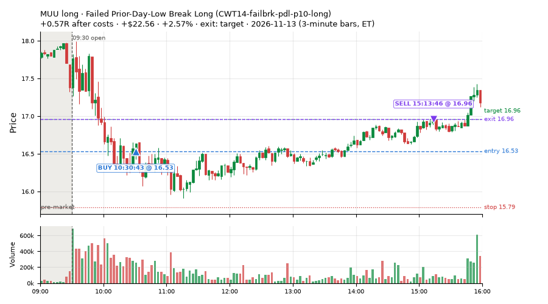
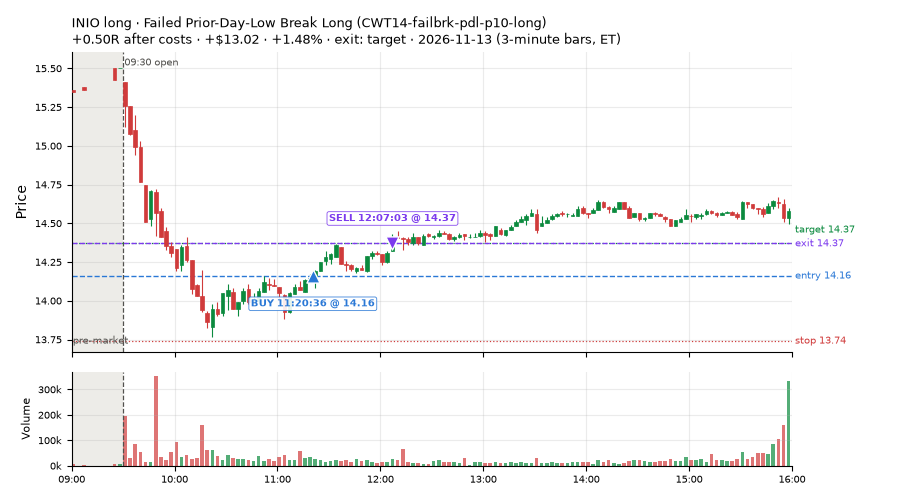
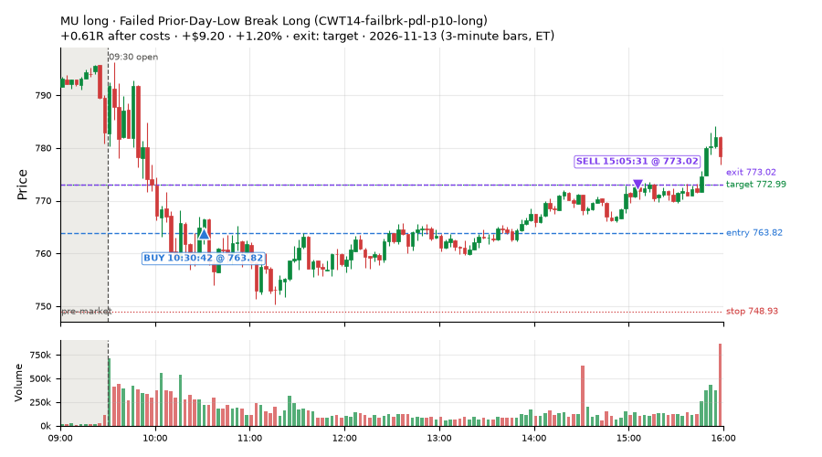
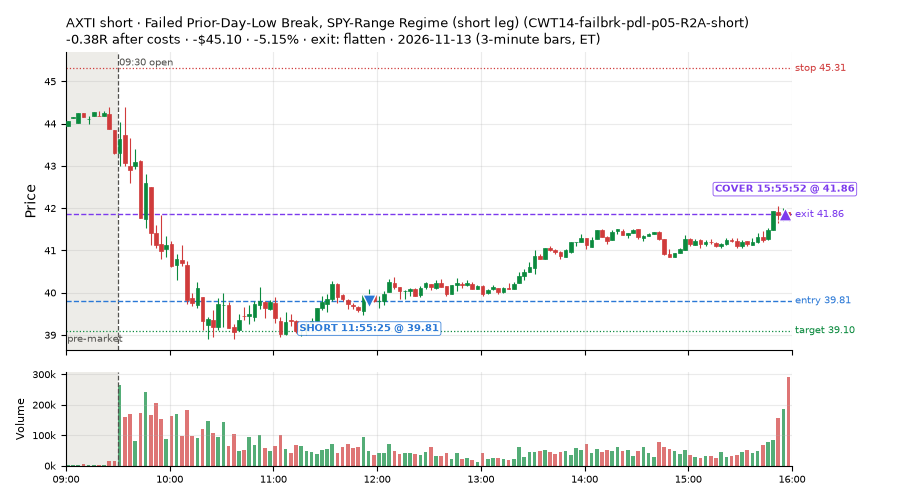
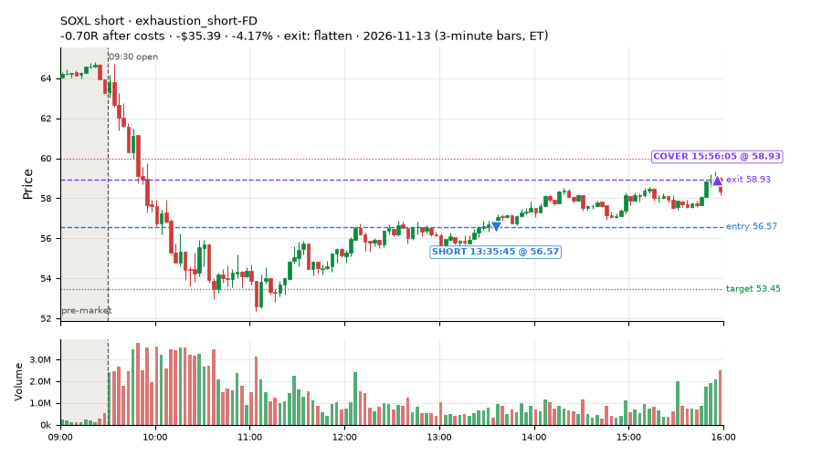
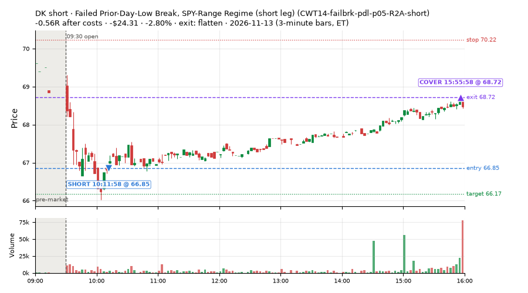
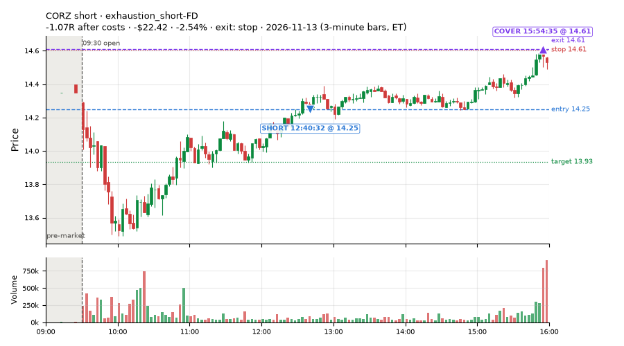
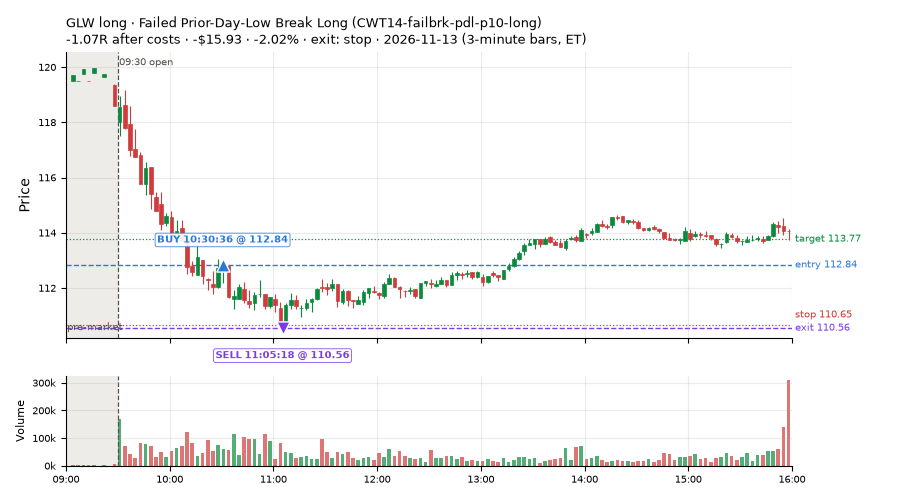

142 trades · win rate 64% · P/L $-55.18
PROBATION: no live setup has passed both locked test periods. 10 owner-directed setups added 2026-10-08 (MarcoFlow top 5 + 5 new), untested live. RW6G1 (RW6 + VWAP band guard) added 2026-10-09, probation.

| Symbol | Setup | Side | In | Out | Entry | Exit | Exit reason | % gained | P/L |
|---|---|---|---|---|---|---|---|---|---|
| MUU | Failed Prior-Day-Low Break Long (CWT14-failbrk-pdl-p10-long) | long | 10:30 | 15:13 | 16.53 | 16.96 | target | +2.57% | $22.56 |
| INIO | Failed Prior-Day-Low Break Long (CWT14-failbrk-pdl-p10-long) | long | 11:20 | 12:07 | 14.16 | 14.37 | target | +1.48% | $13.02 |
| MU | Failed Prior-Day-Low Break Long (CWT14-failbrk-pdl-p10-long) | long | 10:30 | 15:05 | 763.82 | 773.02 | target | +1.20% | $9.20 |
| Symbol | Setup | Side | In | Out | Entry | Exit | Exit reason | % lost | P/L |
|---|---|---|---|---|---|---|---|---|---|
| AXTI | CWT14-failbrk-pdl-p05-R2A-short | short | 11:55 | 15:55 | 39.81 | 41.86 | flatten | -5.15% | $-45.10 |
| SOXL | exhaustion_short-FD | short | 13:35 | 15:56 | 56.57 | 58.93 | flatten | -4.17% | $-35.39 |
| DK | CWT14-failbrk-pdl-p05-R2A-short | short | 10:11 | 15:55 | 66.85 | 68.72 | flatten | -2.80% | $-24.31 |
| CORZ | exhaustion_short-FD | short | 12:40 | 15:54 | 14.25 | 14.61 | stop | -2.54% | $-22.42 |
| GLW | CWT14-failbrk-pdl-p10-long | long | 10:30 | 11:05 | 112.84 | 110.56 | stop | -2.02% | $-15.93 |








Signal to fill: median 2s, 90th percentile 5s (142 trades). Bars close each minute; the order follows the bar close.
Best excursion (MFE): median 0.19R; worst (MAE) median 0.25R. 56% of trades never got +0.25R in our favour; 0 reached +1R and still closed at or below 0.
| Symbol | Setup | Best R | Worst R | Closed R |
|---|---|---|---|---|
| BURL | NM-AR-AM-gapdown-capitulation-long | +0.36 | -1.04 | -1.08 |
| CMG | CWT14-failbrk-pdl-p10-long | +0.25 | -1.24 | -1.18 |
| IWO | MF5-flowsell-vwapup-rsi5hi | +0.23 | -1.02 | -1.14 |
| VHT | CWT14-failbrk-pdl-p10-long | +0.07 | -1.07 | -1.23 |
| UNP | CWT14-failbrk-pdl-p10-long | +0.10 | -1.07 | -1.16 |
| Entry time | Trades | Win | Avg R | P/L |
|---|---|---|---|---|
| 09:50-10:30 | 37 | 81% | +0.09 | $51.24 |
| 10:30-11:30 | 60 | 70% | +0.05 | $66.46 |
| 11:30-13:00 | 24 | 50% | -0.15 | $-92.48 |
| 13:00-14:00 | 7 | 29% | -0.27 | $-56.34 |
| 14:00-16:00 | 14 | 36% | -0.14 | $-24.06 |
| Setup | Trades | Win | Avg R after costs | Adj R (net of SPY) | Avg R ex-market (all sessions) | P/L |
|---|---|---|---|---|---|---|
| Stretched Below VWAP Bounce (CWT13-vwapstretch-z05-long) | 2.0 | 50% | +0.15 | -0.42 | -0.00 (beta +1.38, n 271) | $2.29 |
| Failed Prior-Day-Low Break, SPY-Range Regime (short leg) (CWT14-failbrk-pdl-p05-R2A-short) | 60.0 | 63% | -0.04 | +0.00 | -0.05 (beta -0.20, n 138) | $-70.36 |
| Failed Prior-Day-Low Break Long (CWT14-failbrk-pdl-p10-long) | 57.0 | 72% | +0.10 | -0.12 | -0.10 (beta +1.12, n 678) | $103.60 |
| Sellers into Strength (all day) (MF5-flowsell-vwapup-rsi5hi) owner-directed; holdouts once: Sep-Oct -0.001R n264, Apr-Jun -0.010R n1199 | 8.0 | 62% | -0.12 | +0.21 | +0.14 (beta -0.91, n 41) | $-1.01 |
| Gap-Down Capitulation Buy (near-miss) (NM-AR-AM-gapdown-capitulation-long) | 1.0 | 0% | -1.08 | -1.31 | -0.43 (beta +1.47, n 64) | $-7.89 |
| Early Sellers into a Pop (index down, no gap up) (near-miss) (NM-MF3-qqqdn-gapdn-FD) | 1.0 | 100% | +0.04 | +0.36 | +0.03 (beta -2.08, n 35) | $0.77 |
| Big Loser VWAP Reclaim Fade, Morning, Wide Stop (NS3V1-am-widestop-short) | 2.0 | 0% | -0.18 | +0.17 | -0.24 (beta -0.12, n 56) | $-4.81 |
| exhaustion_short-FD | 11.0 | 45% | -0.27 | -0.14 | -0.06 (beta -0.73, n 117) | $-77.77 |
Market direction (SPY, beta 1) accounted for $-37.16 of today's $-55.18; the rest ($-18.02) came from the setups themselves. Avg R net of SPY: -0.05 (incl. a hedge leg's cost; report only).
11 setups live today. Today: 295 signals, 142 taken, 34 lost because another setup held the symbol (12%). Since 2026-10-12 (25 sessions): 10648 signals, 5355 taken, 781 lost to other setups (7%). Peak open positions today 62 of 400 slots. Earnings blackout removed 547 symbols before scanning.
Simulated playing time (not live): 5274 what-if trades of signals not taken, avg -0.08R, 58% winners; of them 781 lost to another setup (avg -0.19R).
Silent: LD4-st4-breadthup-t1s05-long, LD8-spy-dip030-breadthturn-spxl-holdtr-long, LD1-ns1-breadthup-t05s1-long, CWT04-backside-lh-a25-short, CWT04-backside-vwaptest-a25-short · Crowded out: MF5-flowsell-vwapup-rsi5hi, NS3-failed-vwap-reclaim-short-FD · Starved: MF4-h40-open-flowsell, exhaustion_short-FD, NS5-sma50-flush-oversold-long-FD, RW4-ns3-adv150-short-FD, MF2-open-rsimidhi-flowsell
| Prio | Setup | Today sig / taken | Sessions | Signals / taken / trades | Taken/day | Expected/day | Lost to other setups | Lost to (setup n) | Top skip reasons | SIMULATED: not-taken n / avg R / win | Verdict |
|---|---|---|---|---|---|---|---|---|---|---|---|
| 1 | Big Loser VWAP Reclaim Fade, Morning, Wide Stop NS3V1-am-widestop-short | 3 / 2 | 16 | 125 / 56 / 56 | 3.50 | 5.30 | 3 | NS3V1-am-widestop-short 3, NM-RWR3-ns3-qqqup-early-short 1, NM-RWN3-ns3-spyup-early-short 1 | spread / quote / size 34, not shortable / shorts off 32, symbol held by another setup 3 | 69 / -0.02R / 61% | ok 17.5 entries/week |
| 2 | Gap-Down Capitulation Buy (near-miss) NM-AR-AM-gapdown-capitulation-long | 1 / 1 | 20 | 97 / 64 / 64 | 3.20 | – | 1 | CWT14-failbrk-pdl-p05-R2A-short 1 | spread / quote / size 31, symbol held by another setup 1, other 1 | 33 / -0.07R / 48% | ok 16.0 entries/week |
| 3 | Early Sellers into a Pop (index down, no gap up) (near-miss) NM-MF3-qqqdn-gapdn-FD | 3 / 1 | 18 | 61 / 35 / 35 | 1.94 | 4.90 | 4 | NM-AR-AM-gapdown-capitulation-long 4 | not shortable / shorts off 10, spread / quote / size 10, symbol held by another setup 4 | 26 / +0.19R / 58% | slow 9.7 entries/week; ~6 weeks to 60 trades |
| 4 | Early Sellers, Strong Heat MF4-h40-open-flowsell | 5 / 0 | 3 | 19 / 3 / 3 | 1.00 | 7.24 | 0 | – | spread / quote / size 14, not shortable / shorts off 2 | 16 / -0.72R / 19% | starved 1.00 entries/day vs ~7.24 expected |
| 5 | Stretched Above VWAP Fade (far) CWT13-vwapstretch-z075-short | 0 / 0 | 25 | 46 / 25 / 25 | 1.00 | – | 0 | – | not shortable / shorts off 10, daily loss cap 4, spread / quote / size 3 | 21 / -0.47R / 29% | slow 5.0 entries/week; ~12 weeks to 60 trades |
| 6 | Sellers into Strength (all day) MF5-flowsell-vwapup-rsi5hi | 16 / 8 | 18 | 86 / 41 / 41 | 2.28 | 15.47 | 22 | MF5-flowsell-vwapup-rsi5hi-FD 19, NM-AR-AM-gapdown-capitulation-long 1, CWT14-failbrk-pdl-p05-R2A-long 1 | symbol held by another setup 22, other 11, spread / quote / size 9 | 45 / -0.11R / 44% | crowded-out 22 of 86 signals (26%) lost to setups already holding the symbol |
| 7 | exhaustion_short-FD exhaustion_short-FD | 18 / 11 | 18 | 190 / 117 / 117 | 6.50 | 64.64 | 3 | CWT12-coil-k4-long 3 | not shortable / shorts off 41, spread / quote / size 22, other 7 | 73 / -0.15R / 42% | starved 6.50 entries/day vs ~64.64 expected |
| 8 | Failed Prior-Day-Low Break, SPY-Range Regime (long leg) CWT14-failbrk-pdl-p05-R2A-long | 0 / 0 | 10 | 201 / 136 / 136 | 13.60 | – | 6 | RW3S-gapdn-flowsell-short-FD 6 | spread / quote / size 59, symbol held by another setup 6 | 64 / -0.11R / 61% | ok 68.0 entries/week |
| 9 | Failed Prior-Day-Low Break, SPY-Range Regime (short leg) CWT14-failbrk-pdl-p05-R2A-short | 134 / 60 | 10 | 318 / 138 / 138 | 13.80 | – | 68 | CWT14-failbrk-pdl-p10-long 68, CWT14-failbrk-pdl-p10-lowvol-long 8 | spread / quote / size 103, symbol held by another setup 68, not shortable / shorts off 9 | 178 / -0.00R / 65% | ok 69.0 entries/week |
| 10 | Stretched Below VWAP Bounce CWT13-vwapstretch-z05-long | 2 / 2 | 24 | 542 / 271 / 271 | 11.29 | – | 3 | CWT14-failbrk-pdh-p05-lowvol-short 1, CWT09-gapdn-vwaploss-g10-short 1, CWT09-gapdn-bounce-g10-lowerhalf-short 1 | daily loss cap 152, spread / quote / size 57, other 56 | 270 / -0.10R / 60% | ok 56.5 entries/week |
| 11 | Failed Prior-Day-Low Break Long CWT14-failbrk-pdl-p10-long | 113 / 57 | 25 | 1153 / 678 / 678 | 27.12 | – | 32 | CWT14-failbrk-pdl-p10-lowvol-long 15, CWT14-failbrk-pdl-p05-R2A-short 6, CWT14-failbrk-pdl-p05-lowvol-long 4 | spread / quote / size 289, other 104, symbol held by another setup 32 | 471 / +0.00R / 67% | ok 135.6 entries/week |
Every trade is attached as a CSV you can open and edit in Excel or Google Sheets. Live page: https://misiti15.github.io/MCF/live/